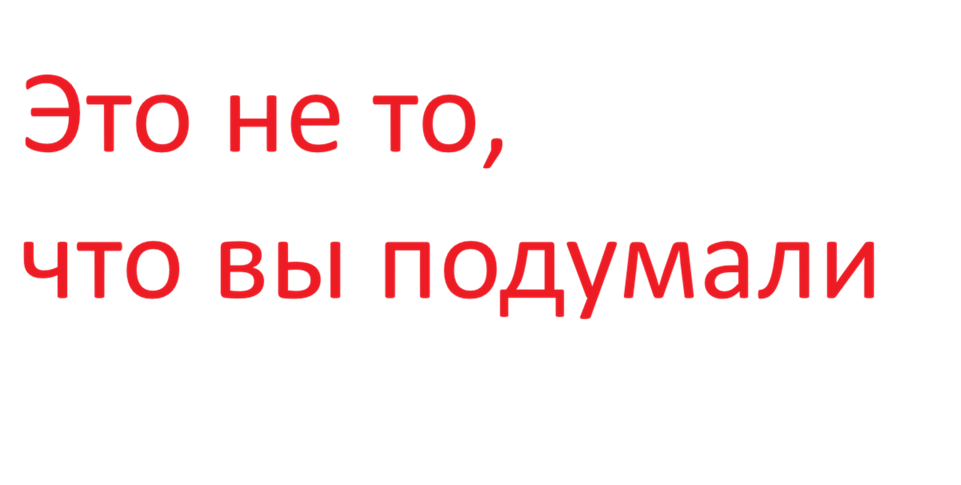

Готовый? Поехали
Это второй уровень
Это третий уровень
Это четвертый, хз кому он нужен
Не, ну если сделали то нужен
Особенно этот. Уровень дно
Давайте поговорим с Вами о Боге. Что Вы о нем знаете? Я знаю, что Бог — это не имя, а отношение человека к бесконечности. В Нём смешались наши лучшие надежды и худшие страхи. Я знаю, что под этим словом каждый подразумевает нечто своё: истину, добро, первопричину или утешение. Но есть одна вещь, которую я знаю точно: даже если Бога нет, потребность в Нём у человека есть всегда. И это, пожалуй, самое важное из всего, что я знаю о Боге
И вот что ещё я знаю. Человек, который говорит «Бог есть», и человек, который говорит «Бога нет», часто спорят об одном и том же, просто называют это разными словами. Первый называет Богом то, что второй называет порядком мироздания, совестью, любовью или случайностью. Но когда первый молится в тишине, а второй смотрит на звёздное небо — в их ощущениях меньше различий, чем им кажется.
Я знаю, что Бог — это ещё и граница. Граница человеческого понимания, за которую мы заглянуть не можем, но постоянно пытаемся. Мы назвали эту границу Богом, потому что нам нужно имя для того, что нас больше нас самих.
И самое трудное, что я знаю о Боге: Он никогда не бывает полностью доказан и никогда не бывает полностью опровергнут. Он остаётся ровно на таком расстоянии от человека, чтобы у того всегда оставался выбор — верить или не верить. И этот выбор, возможно, и есть главное, что делает человека человеком
А ещё я знаю, что человек часто ищет в Боге самого себя. Своего лучшего, невозможного себя — того, кто никогда не ошибается, никогда не устаёт любить и всегда знает, как правильно. Мы проецируем на Него свою тоску по совершенству, а потом обижаемся, что мир не совершенен. Но может быть, именно в этом несовершенстве и скрыт смысл? Может быть, Бог не заканчивает картину не потому, что не может, а потому что ждёт, когда мы сами возьмём кисть?
Я знаю, что есть люди, которым Бог помог выжить. И есть те, кому Он помешал жить. И те, и другие уверены в Нём одинаково сильно. Значит, Бог — это не гарантия счастья и не защита от боли. Бог — это то, с чем человек остаётся наедине в самую трудную минуту, когда врачи уже развели руками, а друзья не знают, что сказать. В эту минуту одни говорят: "Господи, за что?" — и это крик обиды. Другие говорят: "Господи, помоги" — и это крик надежды. А третьи просто молчат — и это, наверное, самое честное.
Я знаю о Боге, что о Нём нельзя думать, не думая одновременно о человеке. И о человеке нельзя думать, не думая о том, что больше него. Эта связь — как дыхание: пока она есть, мы живы. А как её назвать — Бог, судьба, природа, любовь — дело второстепенное
| Это таблица | ||
|---|---|---|
| Это | ячейки | для |
| данных | в | таблице |
| Типы списков | ||
|---|---|---|
| Маркированный | Нумерованный | Вложенный |
|
|
|